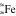

DetectorCalc
The DetectorCalc module can be used to generate detector models for digital detectors (Fig. 17).
Note
In addition to the more general DetectorCalc module there is a simplified detector model calculator: DigRad.
{kind=link}
Fig. 17 DetectorCalc module.
Settings
General Settings
Set the general settings for your new detector:
Name to select the name of the detector.
Pixel size (mm) to set the pixel size of the detector.
Pixel count X to choose the number of pixel in X direction (optional). If the pixel count is set, the choosen number will be set if this detector is selected.
Pixel count Y to choose the number of pixel in Y direction (optional). If the pixel count is set, the choosen number will be set if this detector is selected.
Maximum grey value to set the maximum grey value (for a 16 bit detector the maximum grey value is given bei 2 power 16 = 65635 starting with a minimal grey value of 0)
Grey value quantum (GV) indicates the smallest unit: 1 == integer; 0.1 == one decimal digit.
Sensitivity
Set the sensitivity for your new detector:
Material to set the detector material from the list of already defined materials (pull down menu). You can add any material to the list with help of the materials editor  Materials in the tools menu which also can be accessed via the Toolbar.
Thickness (mm) to set the thickness of the selected detector material.
Steps to set the number of steps for the layer model.
Note
The amount of Steps are relevant for the layer model. The more steps you set, the more accurate the simulation will be. Accordingly, the execution time will increase. Typically two steps are enough for sufficient accuracy.
Min Energy (keV) to set the minimal energy to be count for. The default value is 0 keV.
Max Energy (keV) to set the maximal energy to be count for. The default value is Infinity.
Signal Type to set the signal type. The following options are available via the pull down menu: Average Energy, Photon Count, and Energy Contribution.
{kind=link}
Filtration
It is possible to add a filtration over the new detector.
Click on the green button to add a filter (default filter is Al with 1.0 mm thickness).
{kind=link}
 Click on the red button to delete a selected filter.
Click on the red button to delete a selected filter.
If you want to change the settings of your filtration, click on the corresponding Material or Thickness. For the Material column you can choose a material of the editor list (Tools → Materials). For Thickness just enter your desired value (in mm).
The column Active enables to activate (Yes) or deactivate (No) the selected filter. Therefore use the left mouse button to choose Yes or No.
Exposure - Reference shot
A reference image taken with the X-ray detector in question is used to fit the model for just that detector. This reference image can be an image without a sample, since the most important reference values are the gray value and the noise under free-beam conditions. To create the new detector model, the settings and some selected features of the reference exposure must be specified. (Fig. 18).
Reference exposure settings:
Spectrum to select the source spectrum used for the reference shot. A precalculated or measured spectrum can be loaded by
 Load.
Load.Current (mA) to set the reference current.
Exposure time (s) to set the reference exposure time.
Number of frames to set the number of frames.
Source detector distance (mm) to set the source to detector distance.
Filter spectrum … to filter the source spectrum for the source to detector distance.
Reference exposure features:
Modulation tranfer function to provide a
.aRTdetfile with a MTF, which will used instead of Basic spatial resolution (mm) and Long range unsharpness (mm). Default: empty.Basic spatial resolution (mm) to set the basic spatial resolution (SRb) of the detector, measured according to ASTM-E2002 - 2022 Standard Practice for Determining Image Unsharpness and Basic Spatial Resolution in Radiography and Radioscopy or DIN EN ISO 19232-5:2018 Non-destructive testing — Image quality of radiographs — Part 5: Determination of the image unsharpness and basic spatial resolution value using duplex wire-type image quality indicators.
Note
The basic spatial resolution (SRb) of an X-ray detector is usually larger than the pixel size. Two times the SRb gives the inner unsharpness of the detector.
Long range unsharpness (mm) to set the long range detector unsharpness from internal scatter radiation applying only for imaging plates and flat panel detectors. The extent can be determined on an edge profile (see also DigRad for more details).
Unsharpness ratio (%) to set the internal scatter radiation ISR (%) describing the scatter radiation within the detector. The percentage can be determined on an edge profile (see also DigRad for more details).
Note
The unsharpness values usually have to be determined in advance, since they are normally not measurable in the reference exposure considered here.
Grey value to set the reference grey value, e.g., the grey value at the center of the reference shot.
SNR unnormalized to set the reference unnormalilzed signal to noise ratio, e.g., the SNR at the center of the reference shot.

Fig. 18 Detector calculator, Exposure.
Press Run to apply these settings and save the new detector model as an .aRTdet file.
To restore the DetectorCalc settings stored in an .aRTdet file press Load and choose the file.
Press Default to reset the DetectorCalc settings.
Note
To apply the detector model of a .aRTdet file, simply open the file in aRTist.